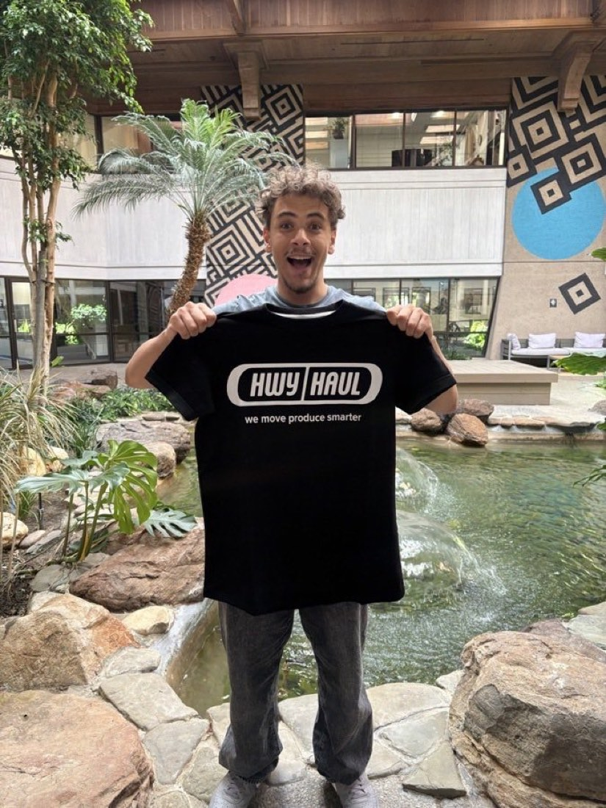

The freight back office, run by AI — not by hand.
At HwyHaul, a freight brokerage moving loads between shippers and carriers, I built an AI layer that reads incoming carrier messages, drafts the reply, and clears the billing & AR back office — 100% on the laptop, zero API cost, and a human always clicks Send.

The Problem
Two things quietly eat a brokerage's day.
The finance and ops teams lose hours to repetitive typing and manual cross-checking across four disconnected systems. That's exactly where automation pays off.
Writing the same emails by hand
Carrier delivery confirmations, payment-date questions, awkward late-payment replies, POD chasers, AR recovery follow-ups — the same messages, retyped all day, every day.
Inbox AI drafts themReconciling the back office by hand
The 30-day payment clock, release lists, carrier advances, and rate fixes — reconciled manually across the load portal, the TMS, Google Sheets, and QuickBooks. Four systems, no glue.
Ops tabs automate itWhat I Built
Two products, one philosophy: AI drafts, a human decides.
Tap a module to see what's inside. Everything runs locally on a FastAPI server and sends real email through the desktop mail account — no cloud, no leaked data.
How It Works
From an incoming message to a sent reply.
A deterministic classifier keeps the demo instant; a local LLM is wired in as an optional upgrade. The pipeline drafts — it never fires blindly.
Incoming message
Carrier email or WhatsApp text arrives at the intake webhook.
Classify & extract
Reads intent, picks 1 of 8 reply types, pulls load / invoice / amount.
Draft in-voice
Fills the matching template in the brokerage's tone.
Human sends
You review, pick the recipient, hit Send — it goes out for real.
# incoming email text ↓ classifier.py # intent → 1 of 8 reply types, extract load/invoice/amount ↓ email_assistant.py # fills the matching template in our voice ↓ you review + pick recipient ↓ Mail.app (osascript) # sends for real — no API key, no cost
The Stack & The Engineering
Built to run anywhere, cost nothing, and never lie about what's real.
Local-first AI
A local LLM (Ollama · qwen3-fast) is the brain, with a fast deterministic rules path so the live demo never lags. No data ever leaves the machine.
Swap-ready integration
Every data access point is marked with a single SWAP line that flips from mock JSON to the live portal / TMS / QuickBooks feed once credentials land.
Honest guardrails
Every draft is editable, a human clicks Send, and sample rows are clearly labeled — nothing shown is real internal data.
Results & What I Learned
Shipped, tested, and honest about the edges.
All 18 finance pain-points, demoable
The AR/Billing controller's full list of 18 items — mapped end-to-end and demonstrable in one local web app, with the two purely-behavioral items flagged honestly as process, not AI.
77 automated tests green
Billing (25/25) and AR (29/29) suites plus intake coverage — a real, test-backed codebase, not a demo held together with tape.
Found & fixed a real crash
Tracked a 500-error where an expired third-party token timed out and crashed the inbound webhook — added error handling so intake stays up regardless.
The big lesson
"Learned more in a couple of weeks than most of a semester." Building AI that ships into a real operations team means designing for failure modes — VPNs down, tokens expired, messy input — first.
Let's talk
Want the deeper walkthrough?
I'm happy to screen-share the demo and talk through the architecture, the tradeoffs, and the failure-mode design.